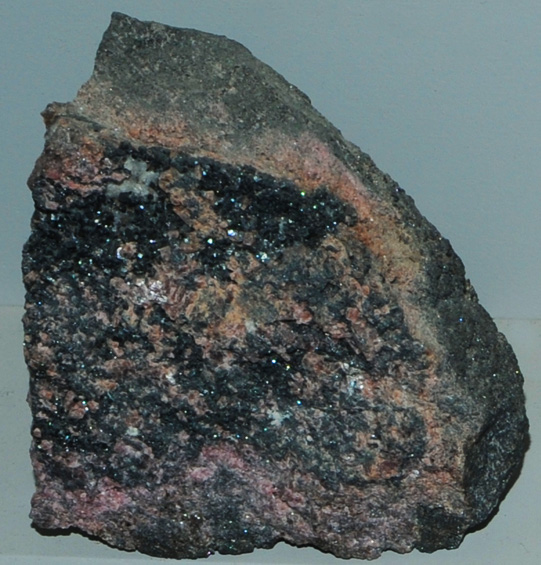

|

| (Mn,Ca)5(Mn,Fe,Sb)2SiO11
This sample of langbanite is displayed in the Smithsonian Museum of Natural History. Langbanite is a silicate mineral of antimony and manganese along with calcium and iron. It has the composition (Mn,Ca)5(Mn,Fe,Sb)2SiO11. The sample at left is about 8 cm across and is from Langban mine, Filipstad, Varmland, Sweden. The black crystals are langbanite.
|